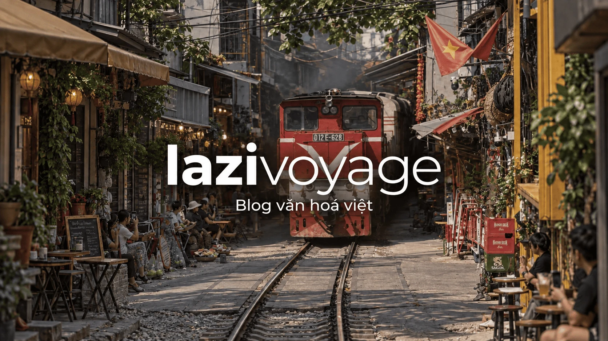
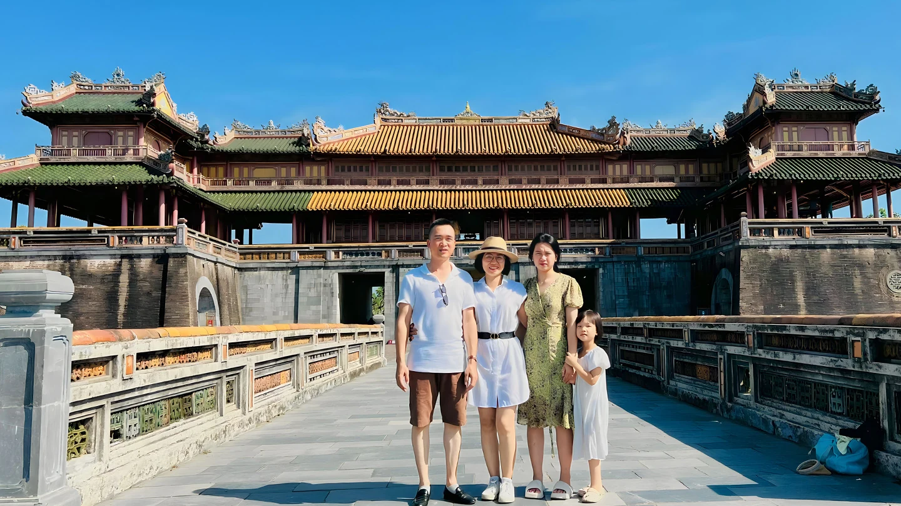

Top Đặc Sản Đà Nẵng Làm Quà Cùng Giá Bán Và Địa Chỉ Uy Tín
Khám phá top đặc sản Đà Nẵng làm quà ngon, dễ mang lên máy bay với nhiều gợi ý quà tặng miền Trung nổi tiếng và địa chỉ mua uy tín.

Những thông tin hữu ích cho chuyến đi của bạn.
Lịch chợ phiên tại Lào Cai, Hà Giang và các tỉnh miền Bắc: chợ theo tuần, chợ lùi, chợ truyền thống.
Xem chi tiếtLịch mùa vàng tại Sa Pa, Bắc Hà, Mù Cang Chải, Tú Lệ và các điểm đến ở miền Bắc.
Xem chi tiếtCác điểm đến từ Bắc vào Nam để chuẩn bị hành trình.
Xem chi tiếtMột Việt Nam. Nhiều điều để khám phá.

Cẩm nang, gợi ý hành trình và kinh nghiệm để chuẩn bị cho những chuyến đi ở Việt Nam.
Khám phá du lịch
Khám phá những món ăn, quán cà phê và hương vị địa phương trên từng hành trình.
Khám phá ẩm thực
Gợi ý những quán cafe đẹp ở Hội An từ phố cổ, ven biển đến view đồng lúa, phù hợp để chill, ngắm cảnh và chụp ảnh đẹp.
Đọc bài viếtKhám phá top đặc sản Đà Nẵng làm quà ngon, dễ mang lên máy bay với nhiều gợi ý quà tặng miền Trung nổi tiếng và địa chỉ mua uy tín.
Khám phá top địa chỉ thuê xe máy Đà Nẵng uy tín với giá hợp lý, xe mới, giao tận nơi và nhiều kinh nghiệm thuê xe hữu ích cho du khách.
Khám phá top món ngon Đà Nẵng và top địa chỉ quán ăn ngon Đà Nẵng với nhiều gợi ý ăn uống địa phương hấp dẫn, dễ tìm và đáng thử.
Cùng xem đâu là những quán cafe view đẹp cực chill và đồ uống ngon ở Đà Nẵng bởi thành phố này không chỉ có biển đẹp hay những cây cầu nổi tiếng, mà còn là nơi rất thú vị để khám phá các quán cafe.
Hội An không chỉ là một điểm du lịch đẹp, mà còn là một lớp trầm tích văn hoá được hình thành qua nhiều thế kỷ. Trong không gian nhỏ của phố cổ, người ta nhìn thấy rõ lịch sử giao thương, dấu ấn cư dân nhiều nguồn gốc, v…
Nếu bạn đang lên kế hoạch du lịch Huế, Đại Nội gần như là điểm phải ghé đầu tiên. Vậy Đại Nội Huế có gì hấp dẫn? Cùng Lazi tìm hiểu trong bài viết này nhé
Một số câu hỏi thường gặp khi khám phá Việt Nam.
Văn hóa Việt là một dòng chảy rực rỡ được bồi đắp qua hàng nghìn năm lịch sử, nổi bật với tinh thần yêu nước, tính cộng đồng và lòng hiếu khách. Cốt lõi của văn hóa Việt nằm ở sự giao thoa hài hòa giữa các giá trị truyền thống như thờ cúng tổ tiên, tôn trọng đạo lý "uống nước nhớ nguồn" và sự cởi mở với những giá trị hiện đại. Mỗi vùng miền từ Bắc chí Nam lại mang một sắc thái riêng: nếu miền Bắc cổ kính với những lễ hội làng quê và chuẩn mực gia đình, thì miền Trung kiên cường với di sản cung đình, còn miền Nam lại phóng khoáng, nồng hậu. Sự đa dạng của 54 dân tộc anh em cùng chung sống đã tạo nên một bức tranh văn hóa Việt đa sắc màu, từ âm nhạc, nghệ sĩ tính đến các phong tục tập quán, luôn khiến du khách phương xa phải trầm trồ và mong muốn được khám phá tận cùng.
Tour Hà Giang Loop là hành trình chinh phục cung đường vòng cung huyền thoại vùng cực Bắc, nơi những dãy núi đá tai mèo hùng vĩ và những con đèo hiểm trở thử thách mọi tay lái. Hành trình thường kéo dài từ 3 đến 4 ngày, bắt đầu từ thành phố Hà Giang đi qua Quản Bạ, Yên Minh, Đồng Văn và Mèo Vạc trước khi quay trở về. Tham gia tour Hà Giang Loop, du khách sẽ được tận mắt chiêm ngưỡng "tứ đại đỉnh đèo" Mã Pì Lèng, ngắm nhìn dòng sông Nho Quế xanh ngọc bích uốn lượn và khám phá đời sống văn hóa đặc sắc của người Mông, người Lô Lô. Để chuyến đi an toàn, bạn nên chọn những đơn vị tổ chức uy tín có đội ngũ "Easy Rider" (tài xế bản địa) nếu không tự tin vào khả năng lái xe máy trên đường đèo. Đừng quên chuẩn bị quần áo ấm vì thời tiết vùng cao có thể thay đổi rất nhanh, và hãy sẵn sàng để trái tim mình bị chinh phục bởi vẻ đẹp hoang sơ, lộng lẫy của đất trời Đông Bắc.
Với hành trình du lịch tự túc Phú Quốc 4 ngày, bạn nên phân bổ thời gian để khám phá trọn vẹn ba khu vực chính: Bắc Đảo, Nam Đảo và trung tâm thị trấn Dương Đông. Hai ngày đầu là thời điểm lý tưởng để trải nghiệm các khu vui chơi giải trí đẳng cấp tại Bắc Đảo như VinWonders hay tham quan vườn thú bán hoang dã Safari. Ngày thứ ba, hãy dành trọn vẹn để đi tour 4 đảo tại phía Nam, lặn ngắm san hô tại hòn Móng Tay, hòn Gầm Ghì và trải nghiệm cáp treo hòn Thơm vượt biển dài nhất thế giới. Ngày cuối cùng, bạn có thể thong dong đi chợ Dương Đông mua đặc sản nước mắm, hồ tiêu về làm quà và ghé thăm Dinh Cậu trước khi ra sân bay. Việc đi tự túc giúp bạn chủ động thời gian, dễ dàng săn được vé máy bay giá rẻ và lựa chọn các homestay gần biển để tận hưởng trọn vẹn không khí của đảo Ngọc mà không bị gò bó bởi lịch trình đoàn.
Đảo Lý Sơn được mệnh danh là "vương quốc tỏi" nhưng sức hút thực sự nằm ở vẻ đẹp địa chất kỳ vĩ được hình thành từ những miệng núi lửa đã tắt hàng triệu năm. Điểm nhấn ấn tượng nhất chính là Đỉnh Thới Lới với vách đá sừng sững nhìn xuống biển xanh ngắt, hay Hang Câu với những đường vân đá bị sóng biển bào mòn qua hàng thế kỷ tạo nên một tuyệt tác của thiên nhiên. Bên cạnh đó, Cổng Tò Vo là địa điểm check-in không thể bỏ qua, đặc biệt là vào lúc hoàng hôn khi ánh mặt trời nhuộm vàng những khối đá nham thạch hình thù độc đáo. Không chỉ có cảnh sắc hoang sơ, Lý Sơn còn mang vẻ đẹp của những cánh đồng tỏi xanh mướt trải dài trên cát trắng và làn nước trong vắt tại Đảo Bé, nơi bạn có thể nhìn thấy tận đáy san hô. Vẻ đẹp của Lý Sơn là sự hòa quyện giữa nét thô mộc của đá, sự trong lành của biển và sự chân chất của những người ngư dân nơi đây.
Du lịch Ninh Bình 2 ngày 1 đêm tự túc là lựa chọn hoàn hảo cho những ai muốn trốn khỏi sự ồn ào của phố thị để tìm về vùng di sản yên bình. Trong ngày đầu tiên, bạn nên ưu tiên tham quan quần thể danh thắng Tràng An để ngồi thuyền xuôi dòng sông Sào Khê, len lỏi qua các hang động kỳ ảo, sau đó ghé thăm Cố đô Hoa Lư để tìm hiểu về lịch sử hào hùng của dân tộc. Buổi tối là lúc tuyệt vời để dạo chơi phố cổ Hoa Lư rực rỡ ánh đèn và thưởng thức đặc sản cơm cháy, thịt dê núi trứ danh. Sang ngày thứ hai, hãy thử thách bản thân bằng cách leo hơn 500 bậc đá tại Hang Múa để ngắm trọn vẹn vẻ đẹp của Tam Cốc từ trên cao – nơi được ví như "Hạ Long trên cạn". Cuối hành trình, một chuyến tham quan chùa Bái Đính với những kỷ lục Phật giáo ấn tượng sẽ giúp tâm hồn bạn trở nên thư thái hơn trước khi kết thúc chuyến đi ngắn ngày nhưng đầy ý nghĩa tại vùng đất địa linh nhân kiệt này.
Để săn được những bức ảnh để đời, du khách cần nắm vững lịch mùa lúa chín miền Bắc vốn thường rơi vào khoảng tháng 9 và tháng 10 hàng năm. Tuy nhiên, tùy vào độ cao và đặc điểm khí hậu của từng địa phương mà lịch mùa lúa chín miền Bắc sẽ có sự chênh lệch đáng kể. Thông thường, vùng cao bát ngát như Y Tý (Lào Cai) hay Hoàng Su Phì (Hà Giang) sẽ bắt đầu thay áo vàng sớm nhất, ngay từ đầu tháng 9. Trong khi đó, tại "thiên đường" Mù Cang Chải hay thung lũng Tú Lệ (Yên Bái), lịch mùa lúa chín miền Bắc thường rộ nhất vào khoảng giữa đến cuối tháng 9. Nếu bạn lỡ hẹn với vùng cao, bạn vẫn có thể xuôi về vùng đồng bằng hoặc các thung lũng thấp như Tam Cốc (Ninh Bình) để chiêm ngưỡng sắc vàng muộn hơn. Việc theo dõi sát sao lịch mùa lúa chín miền Bắc sẽ giúp bạn sắp xếp thời gian nghỉ ngơi hợp lý, đặt phòng sớm tại các khu homestay có tầm nhìn đẹp và tận hưởng không khí mùa thu tuyệt vời nhất của vùng núi phía Bắc Việt Nam.
Khám phá văn hóa bản địa thông qua lịch chợ phiên miền Bắc là một trải nghiệm độc đáo mà bất kỳ du khách nào cũng không nên bỏ qua khi đến với vùng cao. Khác với các khu chợ ở thành phố họp hàng ngày, lịch chợ phiên miền Bắc thường được tổ chức định kỳ vào các ngày cố định trong tuần hoặc theo lịch âm (chợ lùi). Ví dụ, chợ phiên Bắc Hà (Lào Cai) nổi tiếng thường họp vào Chủ nhật hàng tuần, trong khi chợ Đồng Văn (Hà Giang) cũng là điểm hẹn lý tưởng cho ngày nghỉ cuối tuần. Việc nắm rõ lịch chợ phiên miền Bắc giúp bạn không chỉ được mua sắm các loại đặc sản, thổ cẩm tinh xảo mà còn là cơ hội để chứng kiến đời sống sinh hoạt, phong tục tập quán và các lễ hội giao duyên đặc sắc của đồng bào dân tộc thiểu số như H'Mông, Dao, Tày, Nùng. Trước khi khởi hành, bạn nên kiểm tra kỹ lịch chợ phiên miền Bắc của từng địa phương cụ thể vì một số chợ chỉ họp từ tờ mờ sáng và kết thúc khá sớm vào buổi trưa. Hãy chuẩn bị sẵn máy ảnh và một tâm thế cởi mở để hòa mình vào không khí náo nhiệt của những phiên chợ vùng cao này.
Để xây dựng một hành trình xuyên suốt và khoa học, việc sử dụng thành thạo bản đồ du lịch Việt Nam là kỹ năng quan trọng nhất của mọi phượt thủ. Bước đầu tiên, bạn nên sử dụng bản đồ du lịch Việt Nam để xác định các điểm nút giao thông chính và các trục đường quốc lộ huyết mạch như Quốc lộ 1A hoặc đường Hồ Chí Minh. Việc nhìn tổng thể trên bản đồ du lịch Việt Nam giúp bạn ước tính được khoảng cách giữa các tỉnh thành, từ đó phân bổ thời gian di chuyển và nghỉ ngơi sao cho không bị quá sức. Ngoài ra, bản đồ du lịch Việt Nam còn giúp bạn phát hiện ra những địa danh lân cận ít người biết tới, giúp chuyến đi thêm phần thú vị và mang tính khám phá cá nhân. Nếu bạn dự định đi tour dài ngày, hãy đánh dấu các trạm xăng và điểm dừng nghỉ trên bản đồ du lịch Việt Nam để đảm bảo hành trình luôn diễn ra suôn sẻ. Cuối cùng, một tấm bản đồ du lịch Việt Nam được chuẩn bị kỹ lưỡng chính là chiếc chìa khóa giúp bạn tự tin chinh phục mọi nẻo đường, từ vùng đồng bằng trù phú đến những cung đèo hiểm trở vùng biên viễn.